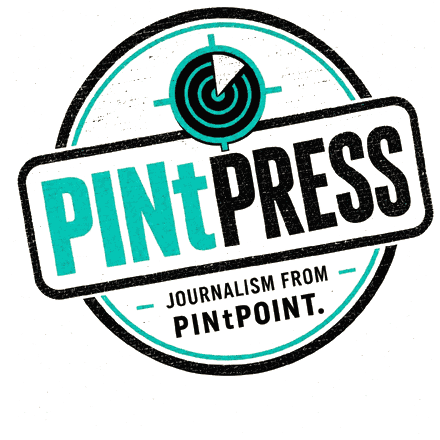

Guides, essays, postcards and notes on beer: where to drink it, where it came from, and what’s in the glass. Nothing sponsored.
New here? Start with the four-essay guide.
Images
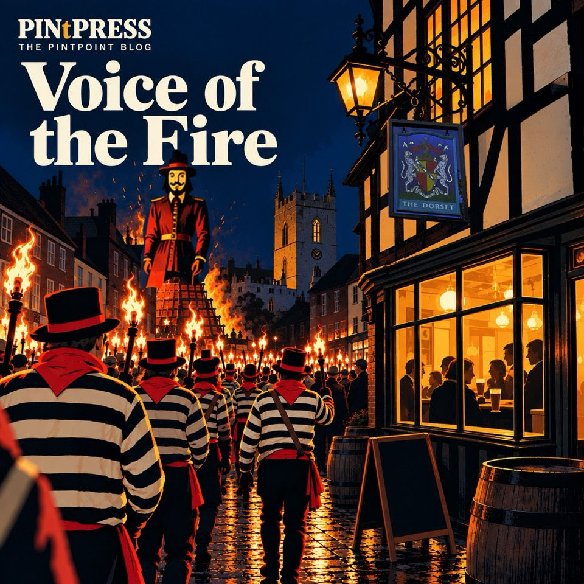
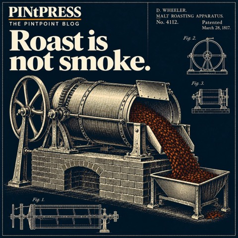
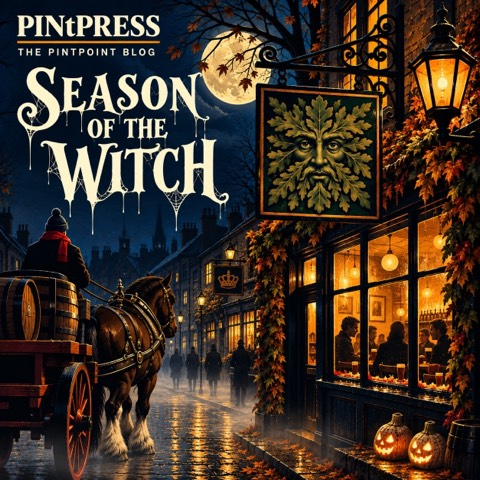
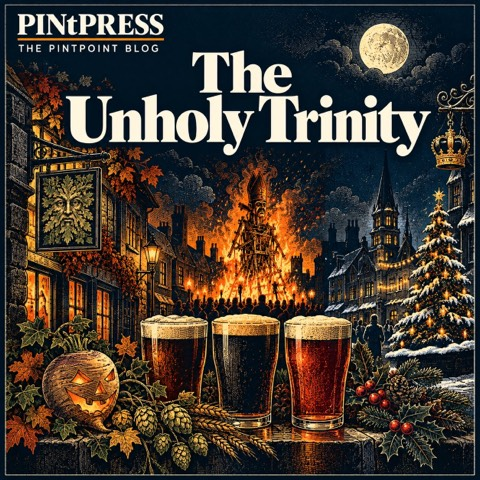
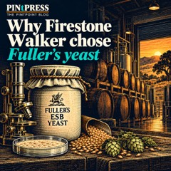
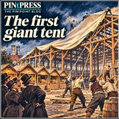
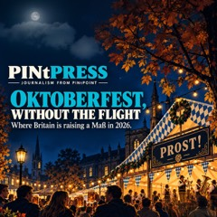
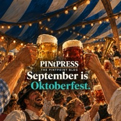
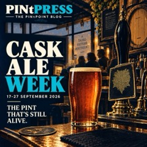
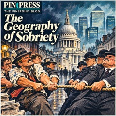
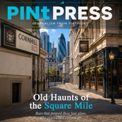
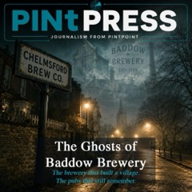
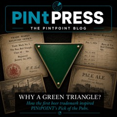
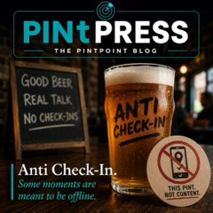
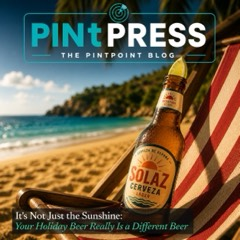
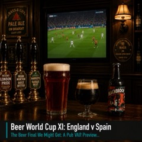
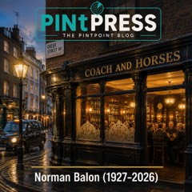
Older posts
-
23 September 2026 · NoteTegernseer on Draught, and WhereTegernseer Hell is one of Bavaria’s most sought-after lagers and reaches British bars in small, unpublicised quantities. Cross-referencing our own live tap data finds eleven UK venues that have poured it.Read the note →
-
30 June 2026 · NoteHumphrey Smith: British Beer's Great Awkward CharacterThe Samuel Smith's beer baron who ran Britain's strangest pub chain by his own private rule has died aged 81. On cheap pints, dark wood, shire horses, boarded-up villages and a row over an air freshener — and on why the whole thing may become easier without him and also less peculiar.Read the note →
-
27 June 2026 · GuideLoaded’s World Cup Canon: From Crisps to VodkaThe canonical record of Loaded magazine’s recurring World Cup format. The first five editions ran in fifteen months from September 1994 to December 1995, Crisp, Washing Powder, Lager’lympics, Cereals and Vodka, and define the format at its peak.Read the guide →
-
25 June 2026 · GuideLager’lympics: Loaded Magazine’s Lost 1995 Lager World Cup, FoundThe full record of the Lager’lympics, Loaded magazine’s 1995 Lager World Cup, published in the ‘What’s For Tea Love?’ supplement. 62 lagers, a knockout bracket and drunk-panel scoring. Budvar beat Molson 178 to 98 in the final.Read the guide →
-
23 June 2026 · EssayBefore Kick-Off: Why English Cask Has the AdvantageThe football is heading to the business end. The Beer World Cup is heading the same way. With the Perfect Pint Promise just launched and heritage cask back on the rise — Greene King selling Old Speckled Hen to Spanish lager giant Damm, Draught Bass tripling distribution this year, JW Lees relaunching cask Boddingtons — the case for English cask is loud and current. The squad of eleven hand-pulled pints we'd send into a Beer World Cup, and why cask is the one format the world can't quite copy.Read the essay →
-
19 June 2026 · GuideWorld Cup 2026 Stadium Beer Map: Help Us Find Good Beer Near The GroundsThe World Cup is here, across 16 host stadiums in North America. We mapped the bars, pubs, breweries, taprooms, bottle shops and beer gardens that can actually help fans before or after a match. A first pass, not the final whistle — Atlanta, Seattle, Philadelphia, Vancouver and Toronto landed cleanly; Dallas, the Bay Area and Mexico City need local knowledge; MetLife is still the loudest help-wanted flag. Open PINtPOINT near a host stadium and add what we missed.Read the guide →
-
19 June 2026 · EssayBeer World Cup XI: 48 Nations, Real Fixtures, Stupidly Serious Beer ResultsThe football teams play on the pitch. The beers play in the pub. Every country in the World Cup gets a beer squad; real fixtures drive the matchups; Pub VAR, The Selection Committee and The Pint Desk arbitrate the disputes. A serialised editorial tournament loosely based on a distant memory of Loaded magazine's lost Beer World Cup. Help us pick the squads.Read the essay →
-
2 June 2026 · EssayBeerology: The Anatomy of a PintWhat does this beer actually feel like to drink? Eight axes — Body, Bitterness, Sweetness, Roast, Fruit, Finish, Softness, Complexity — plus four drinker cues, a drinkability bucket, and one plain-English gut-take sentence per beer. Built for the 800-millisecond tap-list decision; honest about the sour and Belgian-yeast styles it doesn't cover. The capstone of the four-essay arc on choosing the right pint.Read the essay →
-
31 May 2026 · EssayFollowing the Firkin trail(s)…In 1979 David Bruce opened the Goose & Firkin in Elephant and Castle. By 1995 the chain had 44 pubs, 19 of them brewing on site. On 8 October 1999 the brewing stopped — and that, not the 2001 brand-discontinuation, is when Firkin actually died. The 12 original London Firkin sites, plotted on a 1990 paper leaflet, traced — deliberately — the outline of a dog's head. Companion: walk the route in PINtPOINT's new Hall-of-Fame crawl.Read the essay →
Got a topic you'd like us to cover? hello@pintpoint.co.uk